source 3d material: BodyParts3D © The Database Center for Life Science
licensed under CC Attribution-Share Alike 2.1 Japan
source 3d material: BodyParts3D © The Database Center for Life Science
licensed under CC Attribution-Share Alike 2.1 Japan
Hier kannst du dir den Körper in all seinen Einzelheiten ansehen. Leider gibt es derzeit nur ein männliches Modell. Da die grundsätzliche Anatomie bei beiden Geschlechtern sehr ähnlich ist reicht das für einen Überblick ersteinmal aus.
Mit Fingergesten kannst du dir das Modell in die gewünschte Ansicht drehen:
Zoomen kannst du in dem du mit zwei Fingern das Modell größer ziehst:
In der unteren linken Ecke findest du die Einstellungen für die Kamera.
Du findest hier den Namen des Marmas, welches gerade Fokusiert ist.
Bewege den Regler nach oben und unten um die verschiedenen vertikalen Bereiche des Modells zu fokusieren.
Um die automatische Rotation zu stoppen klicke auf das Symbol unten links:
In der unteren rechten Ecke findest du die Einstellungen für die Sichtbarkeit.
Klicke auf eines der Symbole. Nach dem Klick auf eines der Symbole erscheint dieses dann vergrößert.
Unter dem aktivierten Symbol findest du jetzt einen Regler. Mit diesem Regler kannst du die Sichtbarkeit verschiedener Elemente des Modells steuern: von 0% gar nicht sichtbar, bis 100% komplett sichtbar. Werte dazwischen zeigen die Elemente transparent.
Wenn du deine Einstellungen getroffen hast, kannst du das aktive, große Symbol erneut klicken um dieses wieder schrumpfen, bzw. die anderen Symbole anzeigen zu lassen.
Die Elemente des Modell sind in sieben Kategorien eingeteilt. Für jede einzelne Kategorie kann die Sichtbarkeit eingestellt werden.
Sichtbarkeit der Marma Punkte.
Sichtbarkeit der Haut und Haare.
Sichtbarkeit der Muskeln.
Sichtbarkeit der Knochen, Knorpel und Sehnen.
Sichtbarkeit der Organe.
Sichtbarkeit der Venen und Arterien. Achtung, das Modell ist nicht vollständig.
Sichtbarkeit der Nerven. Achtung, es ist nur ein kleiner Teil dargestellt!
Die Kugeln im Modell zeigen den ungefähren Ort der Marmas. Wenn du auf eines der Marmas klickst zoomt die Kamera direkt auf das ausgewählte Marma.
Wenn du ein Marma gewählt hast wird dir unten links statt dem Regler für die Kamera der Name des Marmas und die Marma-Gruppe angezeigt. Mit einem Klick auf dise Infokachel gelangst du direkt zur Marmaseite.
Möchtest du wieder in die ursprüngliche Ansicht wechseln, klick auf das Mensch-Icon unten links.